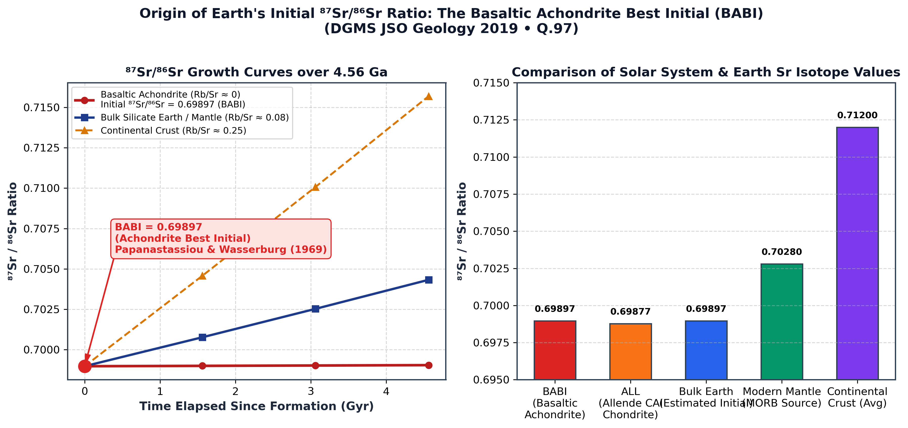

Q.97: The initial 87Sr/86Sr ratio of the earth has been estimated from which one of the following?
Rubidium-87 (β− emitter with decay constant λ = 1.42 × 10−11 yr−1, half-life 48.8 Gyr) decays to radiogenic Strontium-87. The isotopic evolution of strontium in any closed geological reservoir is described by the isochron equation:
Because radioactive decay continuously increases the 87Sr/86Sr ratio over geological time in any reservoir containing rubidium, determining the pristine initial ratio of the proto-Earth at 4.56 Ga requires finding an ancient planetary material that formed with essentially zero rubidium (Rb ≈ 0).
Basaltic achondrites (a group of differentiated stony meteorites comprising eucrites, howardites, diogenites, and angrites) formed by igneous melting on differentiated planetesimals (such as the asteroid 4 Vesta) at 4.56 Ga:
This BABI value represents the canonical baseline initial 87Sr/86Sr ratio of the Bulk Silicate Earth (BSE), Moon, and inner solar system rocky bodies.

| Option | Rock / Meteorite Class | Typical 87Sr/86Sr & Characteristics | Validity as Primordial Earth Initial Reference |
|---|---|---|---|
| (a) | Granite | 0.708 – 0.730+ (High Rb/Sr, highly radiogenic crustal melt) | Incorrect. Granites are highly differentiated felsic rocks enriched in Rb; they have elevated, variable 87Sr/86Sr due to billions of years of crustal radiogenic decay. |
| (b) | Kimberlite | 0.703 – 0.706 (Deep subcontinental mantle source) | Incorrect. Kimberlites are Phanerozoic or Proterozoic mantle-derived pipes that have experienced billions of years of mantle evolution; they do not preserve the primordial 4.56 Ga initial ratio. |
| (c) | Chondrite | 0.700 – 0.730 (Whole rock, Rb/Sr ≈ 0.08) | Incorrect. While undifferentiated, whole-rock chondrites contain moderate volatile Rb and have evolved significant radiogenic 87Sr over 4.56 Ga. (Only refractory calcium-aluminium inclusions (CAIs) like Allende ALL = 0.69877 have low Rb/Sr, but the classic terrestrial reference standard is BABI). |
| (d) | Achondrite | 0.69897 ± 0.00003 (BABI) | Correct. Basaltic achondrites provide the universal reference standard (BABI) for the initial 87Sr/86Sr of the Earth and inner planets due to volatile depletion of Rb and ancient 4.56 Ga crystallization. |
The BABI (Basaltic Achondrite Best Initial = 0.69897) determined from basaltic achondrite meteorites is the universal reference starting point for terrestrial strontium isotope geochemistry. Any terrestrial rock with 87Sr/86Sr > 0.69897 reflects the cumulative decay of 87Rb over planetary history.